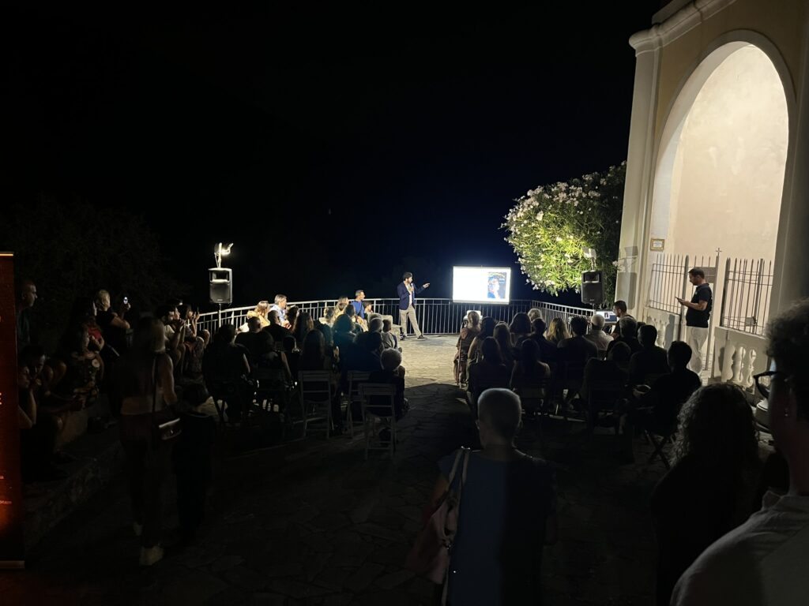
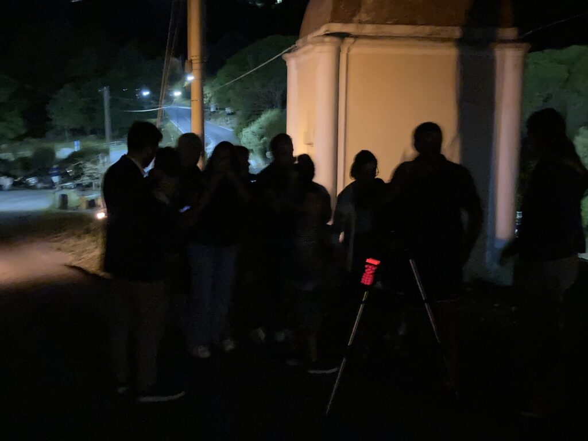
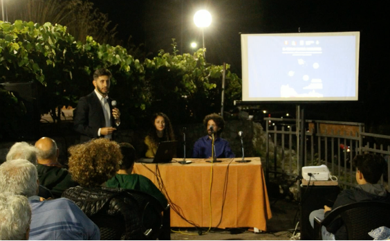

Evento pubblico · Ogni agosto dal 2023
Il cielo sopra Maratea
Una serata d'estate per guardare il cielo con i telescopi, nella cittadina in cui sono nato. È aperta a tutti: non serve nessuna conoscenza di astronomia, solo un po' di curiosità.
- Ruolo
- Talk introduttivo e guida alle osservazioni
- Quando
- Ogni anno ad agosto
- Dove
- Maratea (PZ)
- Organizzazione
- Associazione Lu.Pa.

La serata
Il cielo sopra Maratea è organizzato dall'Associazione Lu.Pa. ed è pensato per il pubblico generico.
La serata si apre con un mio intervento divulgativo, ogni anno su un tema diverso legato all'astronomia o alla scienza in generale. Poi ci si sposta ai telescopi amatoriali, dove guido le osservazioni e racconto cosa si sta guardando.
Galleria
Foto in arrivo
assets/img/maratea-2026.jpg

Foto in arrivo
assets/img/maratea-2024.jpg

La prima edizione
